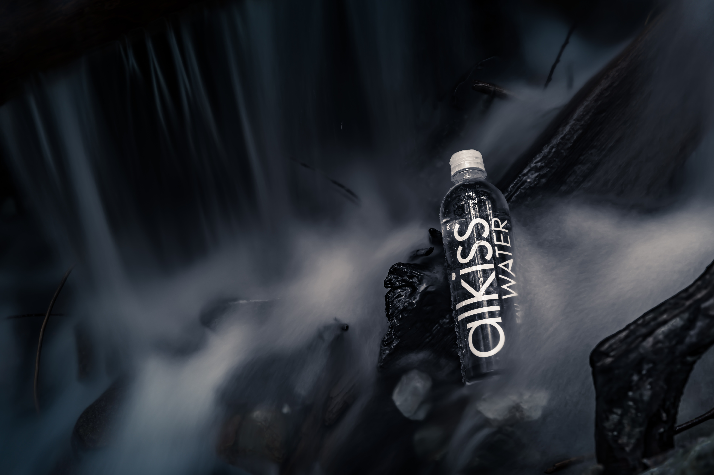

Brands

Without a doubt, spring water is the winner. It is considered the best water to drink, providing vital nutrients as it moves through the body. This is, of course, spring water that is bottled at the source and proven to be actual living spring water.
Alkaline
Alkaline water has a higher pH level than that of plain tap water. So proponents say that it can neutralize acid in your bloodstream. Some say that alkaline water can help prevent disease, such as cancer and heart disease. However, more research is needed to verify these claims.
Hydration
Dehydration is caused by not drinking enough fluid or by losing more fluid than you take in. Fluid is lost through sweat, tears, vomiting, urine or diarrhoea. The severity of dehydration can depend on a number of factors, such as climate, level of physical activity and diet.